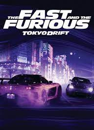

The Fast and the Furious: Tokyo Drift
The Fast and the Furious: Tokyo Drift is a movie that had its premiere in 2006 and was based about a street racer named Sean that moves in with his dad in Tokyo, Japan. When he meets the American Twinkie and tries a new racing style thats called Drifting. He liked the style and was pressured to become one of the very best. My opinion on this movie is that it was very intriguing and exciting to watch. I personally loved it and give it a 10/10.